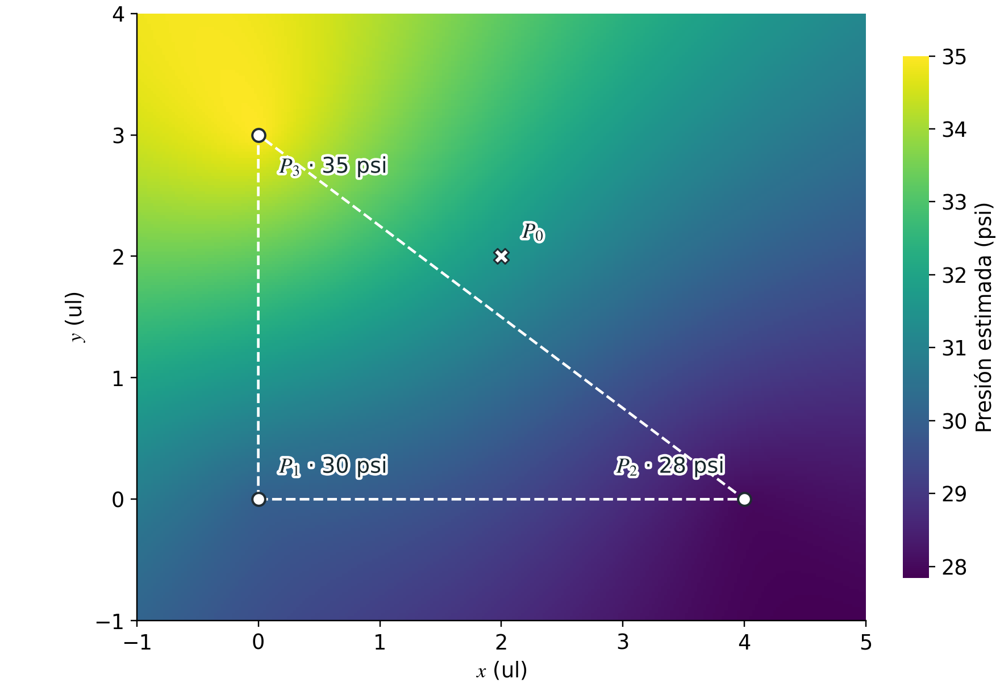
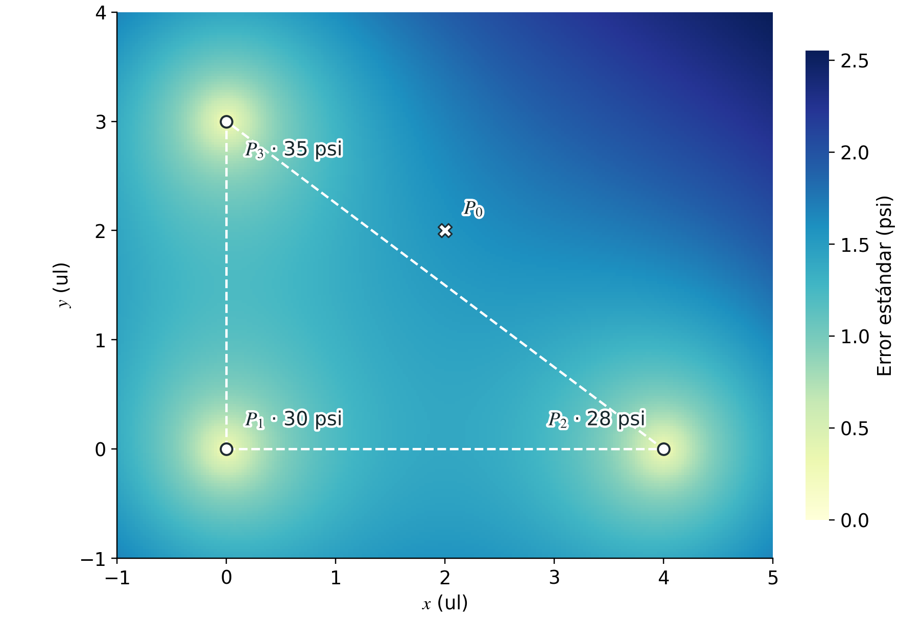

Instrumentación
Kriging: estimar lo que no medimos
De la dependencia espacial a los mapas de presión e incertidumbre en redes de agua.
Medir una variable en todos los puntos de una región es imposible. El kriging permite estimar sus valores en lugares no instrumentados a partir de mediciones dispersas y de un modelo de su variación espacial. Además de una predicción, proporciona una medida de incertidumbre. Desarrollaremos los fundamentos del kriging ordinario, la construcción del semivariograma y la obtención de los pesos mediante un sistema de ecuaciones lineales. Un ejemplo completo con tres sensores de presión mostrará cómo realizar los cálculos simbólicos en Python y extenderlos a una malla para producir mapas. Finalmente, examinaremos las precauciones necesarias para aplicar esta herramienta en redes de distribución de agua, donde la cercanía geográfica y la conexión hidráulica no siempre coinciden.
Un mapa a partir de unas cuantas mediciones
Un sensor informa sobre lo que sucede en el lugar donde está instalado. Un mapa, en cambio, pretende describir una región completa. Entre ambas cosas hay una pregunta estadística fundamental: ¿qué podemos afirmar sobre los lugares que no hemos medido? El kriging responde combinando los datos disponibles con un modelo de la manera en que una variable cambia en el espacio.
Esta idea aparece en aplicaciones muy distintas. En minería, las muestras de algunos sondeos ayudan a estimar la concentración de un mineral en el subsuelo. En agricultura, los análisis de suelo permiten construir mapas de nutrientes o humedad. En estudios ambientales, una red de estaciones proporciona información sobre la concentración de contaminantes. En meteorología e hidrología, las observaciones puntuales sirven para estimar temperaturas, precipitaciones o niveles de agua subterránea. En cada caso cambian la variable y las condiciones físicas, pero permanece el problema de inferir una distribución espacial a partir de datos incompletos.
El atractivo del kriging no se limita a rellenar los espacios en blanco. También permite cuantificar, bajo el modelo adoptado, cuánto desconocemos en cada lugar. Un mapa de valores estimados y un mapa de incertidumbre contestan preguntas diferentes y conviene leerlos juntos.
Presiones donde no hay sensores
En una red de distribución de agua potable no es viable instalar y mantener un sensor de presión en cada nodo. Quedan puntos sin instrumentación en los que interesa conocer la presión para evaluar el servicio, planear nuevas mediciones o complementar un diagnóstico del funcionamiento de la red. Si contamos con observaciones en algunos lugares, podemos plantear una estimación espacial en los demás.
Consideraremos primero un caso idealizado con sensores situados en un plano. Las lecturas corresponderán al mismo instante o a un mismo régimen de operación, y se tratarán como observaciones sin error instrumental. Estas hipótesis hacen transparente el cálculo. Más adelante discutiremos qué debe cambiar cuando intervienen tuberías, diferencias de elevación, válvulas y sensores imperfectos.
El procedimiento reúne herramientas de álgebra lineal y probabilidad. Los productos internos combinarán mediciones y pesos; una matriz describirá la relación espacial entre sensores; y un sistema de ecuaciones resolverá una optimización con restricciones. No basta, sin embargo, con que el sistema tenga solución. También debe ser razonable el modelo físico y estadístico que lo origina.
De los valores medidos a un modelo espacial
Representaremos por $Z(P)$ la variable aleatoria asociada al punto $P$ y por $z(P)$ su valor observado. La distinción entre mayúscula y minúscula separa el modelo probabilístico de una medición concreta. En nuestro ejemplo, $Z(P)$ será la presión y $z(P_i)$ la lectura del sensor situado en $P_i$.
El conjunto de variables ${Z(P)}$ recibe el nombre de campo aleatorio. La idea no es que la posición sea aleatoria, sino que nuestros conocimientos incompletos sobre la variable se representan mediante probabilidades. Dos posiciones pueden contener información parcialmente redundante si sus valores tienden a variar de forma relacionada.
Qué significa que un lugar esté cerca
Un promedio ponderado por el inverso de la distancia, conocido como IDW, asigna mayor influencia a los puntos próximos mediante una regla geométrica. El kriging incorpora, además, un modelo de dependencia espacial y considera cómo se relacionan los sensores entre sí. Dos sensores muy próximos uno del otro pueden aportar información redundante, aunque ambos estén cerca del objetivo. Por ello, no basta con calcular sus distancias al punto de interés.
Existen diferentes modalidades. El kriging simple supone una media conocida; el kriging ordinario trabaja con una media constante, pero desconocida; y el kriging universal permite representar una tendencia mediante funciones de la posición u otras variables. Aquí desarrollaremos el kriging ordinario. Esta clasificación y su relación con la predicción espacial se presentan en Moraga (2023).
El semivariograma
Una forma de describir la variación espacial consiste en estudiar las diferencias entre valores. Si los incrementos tienen media cero, definimos la semivarianza entre dos puntos como
La igualdad entre varianza y segundo momento utiliza precisamente que la diferencia tiene esperanza cero. Cuando la media es constante, esa condición se cumple. Una semivarianza pequeña indica que, según el modelo, las diferencias entre ambos puntos suelen ser pequeñas. Si la presión se expresa en psi, la semivarianza se expresa en $\mathrm{psi}^2$.
La estacionariedad intrínseca supone que la media de los incrementos es cero y que su varianza depende del desplazamiento entre los puntos, no de su ubicación absoluta. Si además no hay una dirección preferente, hablamos de isotropía y podemos escribir $\gamma(P_i,P_j)=\gamma(h)$, donde $h=\|P_i-P_j\|_2$ es la distancia. La función $\gamma(h)$ es el semivariograma. Algunos textos llaman variograma a $2\gamma(h)$; aquí mantendremos explícitamente la convención con el factor $1/2$.
Con suficientes observaciones se puede estimar un semivariograma experimental. Agrupamos pares de puntos cuyas separaciones estén en un intervalo alrededor de $h$ y calculamos
$N_h$ es el conjunto de pares seleccionados y $|N_h|$ su número. Cada par se cuenta una sola vez. Después se ajusta un modelo teórico compatible con esos valores, con el conocimiento del fenómeno y con las condiciones matemáticas de una semivarianza válida. Si existe una tendencia marcada, conviene modelarla antes de interpretar las diferencias como variación aleatoria espacial.
En modelos acotados suelen aparecer tres parámetros. El efecto pepita describe un salto entre la semivarianza en distancia cero y su límite al aproximarse a cero desde distancias positivas; puede representar variación a escalas no resueltas o error de medición. La meseta es el nivel al que llega la semivarianza, y el alcance caracteriza la distancia a la que se alcanza o se aproxima a ese nivel. No todos los modelos tienen meseta o alcance finitos.
El término “efecto pepita” proviene de la minería de oro —cuna de la geoestadística— y hace alusión al escenario donde una perforación golpea directamente una pepita de oro y otra hecha a escasos centímetros no lo hace, generando una diferencia abrupta de concentración a una distancia casi nula.
En teoría, la diferencia de valor entre dos puntos separados por una distancia cero debería ser cero. Pero debido a la existencia de estas “pepitas” (variaciones abruptas a escalas más pequeñas que la distancia de muestreo), existe una discontinuidad matemática.
Un modelo lineal con unidades consistentes
Para concentrarnos en el procedimiento algebraico utilizaremos el modelo
Este semivariograma crece linealmente con la distancia, no tiene meseta y satisface $\gamma(P_i,P_i)=0$. Es un modelo válido de incrementos en el espacio euclidiano. No presupone una covarianza estacionaria de varianza finita en todo un plano ilimitado; la formulación mediante incrementos evita exigir esa hipótesis más fuerte.
Expresaremos las coordenadas en unidades de longitud, abreviadas ul, y elegiremos $c=1\;\mathrm{psi}^2/\mathrm{ul}$. Así, el valor numérico de la semivarianza coincidirá con el de la distancia, aunque sus unidades sean diferentes. El subíndice $2$ de la norma indica distancia euclidiana, no distancia elevada al cuadrado.
Esta pendiente se adopta para un ejemplo hipotético; no se estima a partir de los tres sensores que utilizaremos. Con tan pocos puntos no sería razonable presentar el modelo como una caracterización estadística fiable de una red real.
Los pesos de una predicción insesgada
Sean $P_1,\ldots,P_n$ las posiciones instrumentadas y $P_0$ el punto donde deseamos estimar la variable. Buscamos una combinación lineal
donde $\mathbf{w}=[w_1,\ldots,w_n]^{\mathsf T}$ y $\mathbf{z}=[z(P_1),\ldots,z(P_n)]^{\mathsf T}$. Para una geometría y un semivariograma fijados, el predictor es lineal en las mediciones. Esto no significa que el mapa resultante sea un plano ni que sus contornos sean rectas.
En el kriging ordinario suponemos una media desconocida $\mu$ común a las posiciones consideradas. La esperanza del error es entonces
Para que sea cero cualquiera que sea esa media, imponemos
El vector $\mathbf{1}$ contiene $n$ unos. La restricción también garantiza que el método reproduzca un campo constante. Ser insesgado significa que el error tiene esperanza cero bajo las hipótesis del modelo, no que cada predicción coincida con el valor verdadero.
No imponemos $w_i\geq 0$. Los pesos de kriging pueden ser negativos y la predicción puede quedar fuera del intervalo de los valores observados. Aunque a menudo se hable de un promedio ponderado, en general se trata de una combinación afín, no necesariamente de un promedio convexo.
De la incertidumbre a un sistema lineal
La varianza que queremos minimizar
Definamos la matriz de semivarianzas entre sensores y el vector de semivarianzas respecto del objetivo mediante
La matriz $\boldsymbol{\Gamma}$ es simétrica y su diagonal es cero. Es una matriz de semivarianzas, no de covarianzas. Esta distinción es importante tanto para los signos de las ecuaciones como para elegir un método de resolución numérica.
Con pesos que suman uno, el error puede escribirse como una combinación de incrementos respecto de $P_0$. Si llamamos $\Delta_i=Z(P_i)-Z(P_0)$, tenemos
La segunda igualdad se obtiene de la identidad $2\operatorname{Cov}(U,V)=\operatorname{Var}(U)+\operatorname{Var}(V) -\operatorname{Var}(U-V)$. Al sustituirla en la varianza de la suma y utilizar $\sum_iw_i=1$, resulta
Como el error tiene media cero, su varianza coincide con su error cuadrático medio. Minimizar esta expresión equivale a buscar, dentro de la familia de predictores lineales insesgados, el que tenga menor error cuadrático esperado. Ese es el sentido preciso de la palabra óptimo; no garantiza superioridad frente a cualquier método ni frente a un modelo físico mejor informado.
La restricción y el multiplicador de Lagrange
Introducimos un multiplicador $\lambda$ para imponer la suma de pesos. Con una convención de signos que mantendremos en todo el desarrollo, el lagrangiano es
Igualar a cero sus derivadas respecto de los pesos y del multiplicador conduce a
$\lambda$ es una incógnita del problema, no un parámetro de penalización que debamos ajustar. Tampoco es el peso de una medición adicional. Su función es hacer compatible el mínimo con la restricción de insesgamiento.
Es un sistema de $n+1$ ecuaciones con $n+1$ incógnitas. Escrito entrada por entrada, adopta la forma
Por qué el modelo de semivarianza importa
Para que estas ecuaciones representen una minimización válida, no es suficiente inventar una función positiva que valga cero en el origen. Una semivarianza admisible debe satisfacer, para cualquier conjunto finito de puntos, la condición
Esta propiedad se llama semidefinitud negativa condicional. Su consecuencia es concreta. Si modificamos unos pesos óptimos en una dirección $\mathbf{a}$ cuya suma sea cero, seguimos cumpliendo la restricción. El cambio en la varianza es $-\mathbf{a}^{\mathsf T}\boldsymbol{\Gamma}\mathbf{a}$, que no puede ser negativo. Por tanto, no obtenemos una varianza menor. La desigualdad estricta para toda dirección admisible no nula garantiza la unicidad de los pesos.
La matriz ampliada $\mathbf{A}$ es simétrica, pero no es una matriz de covarianza positiva definida. Un solucionador general mediante factorización LU es apropiado; no debemos aplicarle directamente una factorización de Cholesky suponiendo que posee aquella propiedad.
La incertidumbre también sale del sistema
Una vez resuelto el sistema, la presión estimada se calcula con $\widehat z(P_0)=\mathbf{w}^{\mathsf T}\mathbf{z}$. Para obtener su varianza no hace falta repetir toda la expresión cuadrática. Multiplicando la primera ecuación del sistema por $\mathbf{w}^{\mathsf T}$ encontramos
Al sustituir en la varianza, resulta la fórmula compacta
Esta igualdad utiliza los pesos y el multiplicador que resuelven el sistema; no vale para un vector arbitrario de incógnitas. El signo de $\lambda$ depende de la convención adoptada en el lagrangiano. Con el sistema escrito aquí, el multiplicador se suma.
Los pesos son adimensionales y tanto $\lambda$ como $\sigma_k^2$ tienen unidades de presión al cuadrado. La raíz cuadrada $\sigma_k=\sqrt{\sigma_k^2}$ es la desviación estándar del error de predicción, también llamada error estándar de kriging, y se expresa en las mismas unidades que la presión.
Tres sensores y un punto sin instrumentar
Consideremos las siguientes posiciones y lecturas. Deseamos estimar la presión en $P_0=(2,2)$, donde no hay un sensor.
Los sensores forman un triángulo rectángulo con lados de longitudes $3$, $4$ y $5$. Las distancias desde el objetivo son $\|P_1-P_0\|_2=2\sqrt2$, $\|P_2-P_0\|_2=2\sqrt2$ y $\|P_3-P_0\|_2=\sqrt5$. Con la pendiente elegida, las matrices numéricas son
El determinante numérico de $\mathbf{A}$ es $-44$, distinto de cero. Existe una única solución, que podemos expresar algebraicamente como $\mathbf{u}=\mathbf{A}^{-1}\mathbf{b}$. Sus valores aproximados son
La suma de los pesos exactos es uno. Aunque $P_1$ y $P_2$ están a la misma distancia de $P_0$, sus pesos no coinciden. Sus relaciones con el tercer sensor son diferentes, y el sistema utiliza toda esa información espacial.
La varianza y el error estándar resultan
Una particularidad geométrica del ejemplo
El punto $P_0$ está dentro del rectángulo que contiene a los sensores, pero fuera del triángulo que forman. En el primer cuadrante, el interior de ese triángulo satisface $x/4+y/3\leq1$. Para $(2,2)$ obtenemos $7/6>1$. Por tanto, aunque usemos un método habitualmente llamado de interpolación, esta predicción es una extrapolación respecto de la envolvente convexa de los sensores.
Que todos los pesos hayan resultado positivos no cambia esa ubicación. Los pesos de kriging no son, en general, coordenadas baricéntricas capaces de reproducir exactamente cualquier función lineal de la posición. La restricción del kriging ordinario reproduce constantes, no tendencias espaciales arbitrarias.
Resolución simbólica en Python
SymPy permite conservar las distancias como números exactos, incluidos los
radicales, hasta el momento de mostrar los resultados. NumPy y Matplotlib
servirán después para calcular y dibujar una malla. Las tres bibliotecas se
pueden instalar con python -m pip install sympy numpy matplotlib.
El programa completo reúne los
siguientes bloques, que se ejecutan en el orden en que aparecen.
Geometría, semivarianzas y solución
La clase Point representa las posiciones y su método
distance calcula la distancia euclidiana. Con las coordenadas
enteras utilizadas aquí, SymPy mantiene una representación exacta. De este
modo no introducimos aproximaciones decimales en cada paso del álgebra.
A.LUsolve(b) resuelve el sistema sin construir explícitamente
la inversa. La expresión A.inv() * b es equivalente cuando
$\mathbf{A}$ es invertible, pero resolver el sistema directamente es la
opción habitual, especialmente al trabajar con aritmética numérica.
La selección u[0:3, 0] extrae las primeras tres filas de la
única columna de u; el límite superior del intervalo no se
incluye. Así obtenemos el subvector de pesos, mientras que
u[3] recupera el multiplicador. El método dot
calcula un producto interno y devuelve un escalar. Por ejemplo,
u.dot(b) equivale a (u.T * b)[0].
Un reporte de los resultados
El reporte muestra una presión de $31.592359$ psi y un error estándar de
$1.560441$ psi. Las conversiones con float solo se utilizan al
imprimir; las variables simbólicas conservan sus valores exactos. Los seis
decimales facilitan comprobar el programa y no representan la resolución
física de unos sensores reales.
Qué pasa cuando la matriz es singular
Si colocamos dos sensores en la misma coordenada, por ejemplo al asignar
P2 = P1 antes de construir la matriz, las filas correspondientes
de $\mathbf{A}$ son idénticas en este modelo sin ruido. La matriz pierde
rango, su determinante es cero y deja de haber una solución única para
todos los pesos. No significa necesariamente que el sistema sea incompatible;
puede tener infinitas soluciones.
La comprobación del programa detecta ese caso y lanza el
ValueError con el mensaje indicado. Si se intentara invertir
directamente una matriz singular sin esa comprobación, SymPy podría lanzar
NonInvertibleMatrixError. Son dos situaciones distintas, aunque
ambas avisan de que no existe una inversa.
Las mediciones repetidas en un mismo sitio no se resuelven desplazando artificialmente un sensor en el mapa. Pueden combinarse cuando ello tenga sentido experimental, o incorporarse mediante un modelo de error de medición. Si difieren, esas diferencias contienen información sobre repetibilidad, calibración o variación temporal que el modelo sin ruido no representa.
Con matrices numéricas, dos posiciones casi coincidentes también pueden producir un problema mal condicionado. En ese caso, comprobar únicamente si el determinante es exactamente cero no basta. Conviene examinar el condicionamiento, el escalado de las variables y la sensibilidad de la solución. La prueba simbólica del determinante es útil aquí por el tamaño pequeño y los datos exactos del ejemplo.
Del punto aislado al mapa completo
Para construir un mapa repetimos el cálculo en una malla de objetivos. Las posiciones de los sensores y el semivariograma permanecen fijos, por lo que $\mathbf{A}$ no cambia. Solo cambia el vector de distancias al objetivo y, con él, el miembro derecho. Podemos reunir todos esos vectores como columnas de una matriz $\mathbf{B}$ y resolver de una vez
Cada columna de $\mathbf{U}$ contiene los pesos y el multiplicador para una posición. Esto aprovecha la misma factorización de $\mathbf{A}$ para varios miembros derechos. El ejemplo utiliza una malla de $241\times201$ puntos que incluye las posiciones de los tres sensores y el objetivo $P_0$.
La matriz distancias tiene una fila por sensor y una columna
por objetivo. La última fila de B contiene unos para imponer
el insesgamiento en todas las predicciones. En U * B la
multiplicación es elemento a elemento; sumar por columnas reproduce el
producto $\mathbf{u}^{\mathsf T}\mathbf{b}$ en cada ubicación.
Una varianza matemáticamente válida no puede ser negativa. El código tolera únicamente pequeños residuos de redondeo y los sustituye por cero antes de calcular la raíz. Un valor negativo apreciable provoca un error para evitar ocultar una inconsistencia del modelo o del cálculo.

El mapa no contiene nuevas mediciones entre los sensores. Cada color procede de la combinación de tres lecturas bajo un mismo modelo. La apariencia continua de la superficie no debe confundirse con una cobertura experimental igualmente densa.

Código para calcular y graficar la malla
Este bloque es autocontenido. Define los tres sensores, construye la malla ampliada y resuelve el sistema para sus $48\,441$ puntos antes de mostrar ambos mapas en pantalla. Puede ejecutarse por sí solo, sin reutilizar variables de los bloques anteriores. Los ejes conservan la misma escala para no deformar las distancias y las variables se representan con tipografía matemática.
Cómo interpretar el mapa de incertidumbre
En el modelo sin ruido, estimar en la posición de un sensor reproduce su lectura y da varianza cero. Se puede comprobar sin cálculo numérico. Si $P_0=P_j$, el vector que asigna peso uno al sensor $j$ y cero a los demás, junto con $\lambda=0$, resuelve el sistema. No significa que los sensores sean físicamente perfectos; significa que así los hemos representado.
Para un semivariograma fijado, la varianza de kriging depende de la geometría de muestreo y de ese modelo, no de los valores particulares de $\mathbf{z}$. Si cambiáramos las tres presiones manteniendo las posiciones y el semivariograma, cambiaría el primer mapa, pero no el segundo. Cuando los parámetros del semivariograma se estiman con los datos, existe una dependencia indirecta que esta observación no elimina.
También importa la escala del semivariograma. Si multiplicamos todas sus semivarianzas por un factor positivo, los pesos se mantienen, mientras que el multiplicador y la varianza se multiplican por ese factor. Por ejemplo, cuadruplicar la pendiente $c$ no modifica la presión estimada, pero duplica el error estándar. Un mapa de presión visualmente convincente no basta para justificar la incertidumbre que lo acompaña.
El error estándar tampoco es el error observado, pues desconocemos la presión verdadera en $P_0$. Ni siquiera garantiza que el error absoluto sea menor que $1.56$ psi. Si, adicionalmente, el modelo de error fuera gaussiano y sus parámetros estuvieran correctamente especificados, podríamos usar un intervalo predictivo basado en el error normal:
Ese intervalo tendría una cobertura nominal del 95 % bajo aquellas hipótesis. Aquí ilustra la interpretación de la desviación estándar, no constituye una garantía para una red real. La incertidumbre por estimar el semivariograma, por errores de los sensores o por una estructura espacial mal representada requiere tratamiento adicional.
En una red de agua, la distancia no lo explica todo
El ejemplo anterior describe puntos en un plano, no una red hidráulica completa. Dos sensores instalados en calles paralelas podrían estar separados por apenas 10 metros en línea recta, mientras que el recorrido que los conecta por tuberías mide 400 metros y pasa por tres codos y una válvula. La distancia euclidiana por sí sola no describe esa conectividad ni los elementos que condicionan la pérdida de carga.
Esto no vuelve inútil toda interpolación euclidiana. Puede ser una aproximación razonable en ciertas zonas y condiciones de operación, siempre que los datos la respalden. Lo que no corresponde es suponer que dos presiones deben ser casi iguales solo porque sus sensores aparecen juntos en el mapa.
Distancias sobre el grafo de tuberías
Una red puede representarse mediante un grafo cuyos nodos son conexiones y cuyos enlaces son tuberías. Una posible medida de separación es la longitud del camino más corto entre dos puntos del grafo. Incorpora conectividad que la distancia en línea recta omite, pero no representa necesariamente la influencia hidráulica efectiva. En una red mallada puede haber varios recorridos, y los caudales se distribuyen según las condiciones de toda la red.
Además, sustituir una distancia euclidiana por una distancia de caminos mínimos dentro de cualquier fórmula no garantiza un semivariograma admisible. Hay que conservar la condición de semidefinitud negativa condicional, o construir una covarianza válida sobre el grafo. Las restricciones dependen tanto de la función como de la métrica y de la estructura de la red. El trabajo de Anderes, Møller y Rasmussen (2020) desarrolla precisamente esta cuestión para covarianzas sobre grafos y sus aristas.
En la práctica, la longitud de tubería es solo una parte del problema. También importan los diámetros, la rugosidad, los caudales, las demandas, los niveles de los depósitos, la operación de bombas y las aperturas de válvulas. Una distancia topológica no sustituye las ecuaciones de conservación ni las relaciones de pérdida de carga.
Presión, elevación y tendencias
Dos puntos conectados pueden tener presiones diferentes debido a su elevación. Una magnitud útil para distinguir esa contribución es la carga piezométrica, expresada como
donde $h_e$ es la elevación respecto de un datum común, $p$ la presión, $\rho$ la densidad del agua y $g$ la aceleración de la gravedad. Si se utilizan metros y unidades del Sistema Internacional, la presión debe convertirse a pascales antes de calcular $p/(\rho g)$; no se sustituyen directamente los valores en psi. La carga piezométrica no incluye el término cinético de la carga total.
Si existe una tendencia de presión asociada con la elevación o con la operación de la red, una media constante puede resultar inadecuada. Es posible incorporar esa tendencia mediante kriging universal o interpolar residuos respecto de un modelo de referencia. Si $m(P)$ es una predicción hidráulica de presión, por ejemplo, podemos trabajar con
En ese caso se modela la dependencia espacial de los residuos, no la de las presiones brutas. El modelo de referencia y sus errores también deben evaluarse. La corrección estadística, por sí sola, no garantiza que el resultado satisfaga exactamente todas las ecuaciones hidráulicas.
De un ejercicio reproducible a una aplicación fiable
Antes de usar el kriging para tomar decisiones conviene seguir una secuencia de comprobaciones que vaya más allá de obtener un mapa continuo.
- Precisar qué se predice. No es lo mismo estimar la presión física en un punto que predecir la próxima lectura de un sensor con ruido. La incertidumbre instrumental debe entrar en el modelo correspondiente.
- Sincronizar y revisar los datos. Mezclar lecturas de horas o regímenes distintos puede convertir cambios temporales en aparentes diferencias espaciales. También deben revisarse unidades, calibración, coordenadas y valores anómalos.
- Examinar tendencias y direcciones. Una estructura espacial puede variar con la elevación, la dirección o la zona de operación. La isotropía y la media constante son hipótesis que se evalúan, no propiedades automáticas de los datos.
- Ajustar un modelo admisible. El semivariograma debe describir razonablemente la variación observada y respetar las condiciones matemáticas de la geometría utilizada.
- Validar fuera del ajuste. Reservar mediciones o retirar sensores por turnos permite comparar predicciones con valores conocidos. Si se ajustan parámetros, ese ajuste debe hacerse sin utilizar los datos reservados. Con tres sensores la validación es demasiado limitada para sostener conclusiones generales.
- Evaluar también la incertidumbre. Además del sesgo y del error cuadrático, interesa comprobar si los errores observados son coherentes con las desviaciones estándar anunciadas.
- Respetar el dominio físico. En una red, los objetivos de interés son los nodos y las tuberías pertinentes. Colorear todo un rectángulo es útil para este ejemplo geométrico, pero no convierte cada píxel en un punto real de la infraestructura.
El mapa de incertidumbre puede orientar la colocación de nuevos sensores, aunque también deben considerarse la accesibilidad, los costos y la relevancia operativa de cada ubicación. Una predicción anómala puede justificar una investigación; no identifica por sí sola una fuga ni su causa.
Kriging en plataformas geoespaciales
Google Earth Engine ofrece el método
ee.FeatureCollection.kriging
para transformar observaciones puntuales en una imagen de predicciones.
Su documentación incluye un ejemplo de temperatura del aire y permite
configurar modelos de semivariograma exponencial, gaussiano o esférico,
junto con sus parámetros y un radio de búsqueda. Es una opción para
integrar la interpolación en proyectos de análisis geoespacial.
El modelo lineal empleado aquí no figura entre las formas que acepta directamente ese método. Por tanto, trasladar el ejercicio a esa plataforma requiere elegir y justificar un modelo compatible, no copiar los números sin más. Disponer de una herramienta de cálculo no elimina la necesidad de revisar los supuestos ni incorpora automáticamente la topología hidráulica.
Estimar también es reconocer lo que falta
El kriging ordinario convierte una hipótesis sobre la variación espacial en pesos de predicción mediante un sistema lineal. La suma de los pesos impone insesgamiento para una media constante desconocida; la minimización de la varianza selecciona los pesos; y el mismo sistema proporciona una medida de incertidumbre. El ejemplo de tres sensores permite seguir cada paso desde las distancias hasta una presión de $31.59$ psi con un error estándar de $1.56$ psi bajo el modelo adoptado.
Su utilidad práctica depende de que la estructura espacial represente el fenómeno que queremos estudiar. En redes de agua, eso exige atender tanto a la geometría como a la hidráulica y a la calidad de las mediciones. El resultado más valioso no es simplemente una superficie sin huecos, sino una estimación acompañada de supuestos explícitos, incertidumbre interpretable y comprobaciones experimentales.
Referencias
- Anderes, E., Møller, J., & Rasmussen, J. G. (2020). Isotropic covariance functions on graphs and their edges. The Annals of Statistics, 48(4), 2478–2503. https://doi.org/10.1214/19-AOS1896
- Google. (2023, 6 de octubre). ee.FeatureCollection.kriging. Google Earth Engine. https://developers.google.com/earth-engine/apidocs/ee-featurecollection-kriging
- Moraga, P. (2023). Spatial statistics for data science: Theory and practice with R. Chapman & Hall/CRC. https://www.paulamoraga.com/book-spatial/